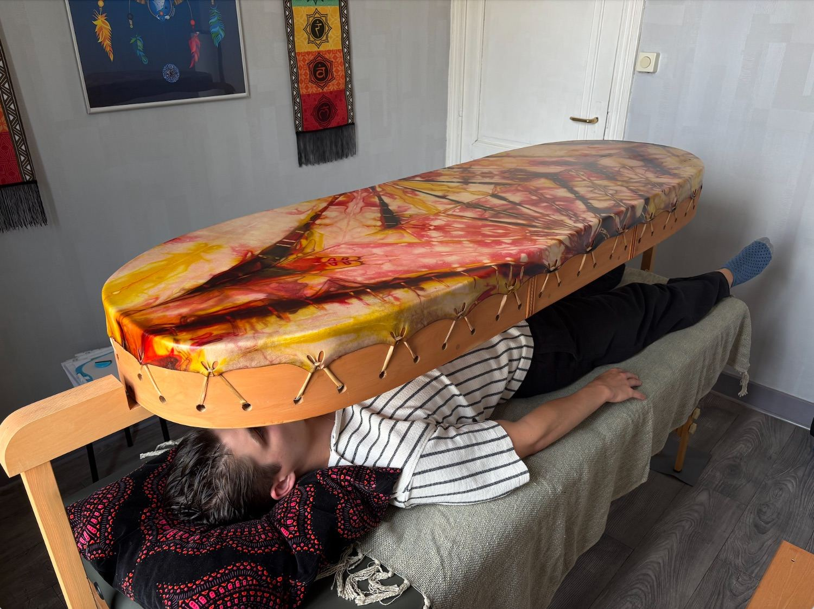
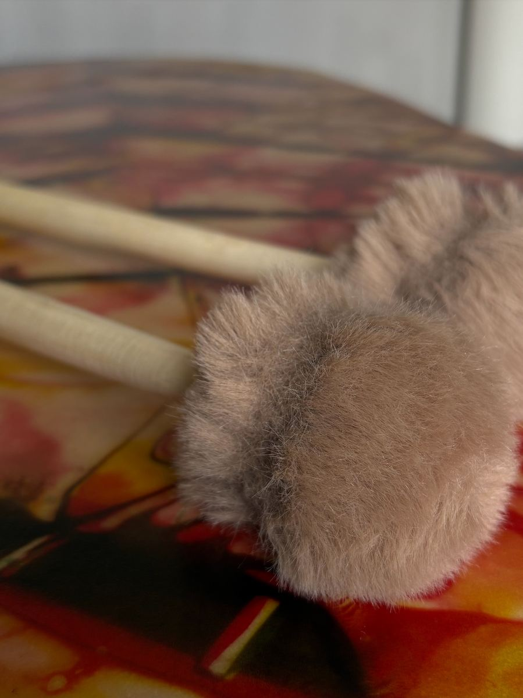
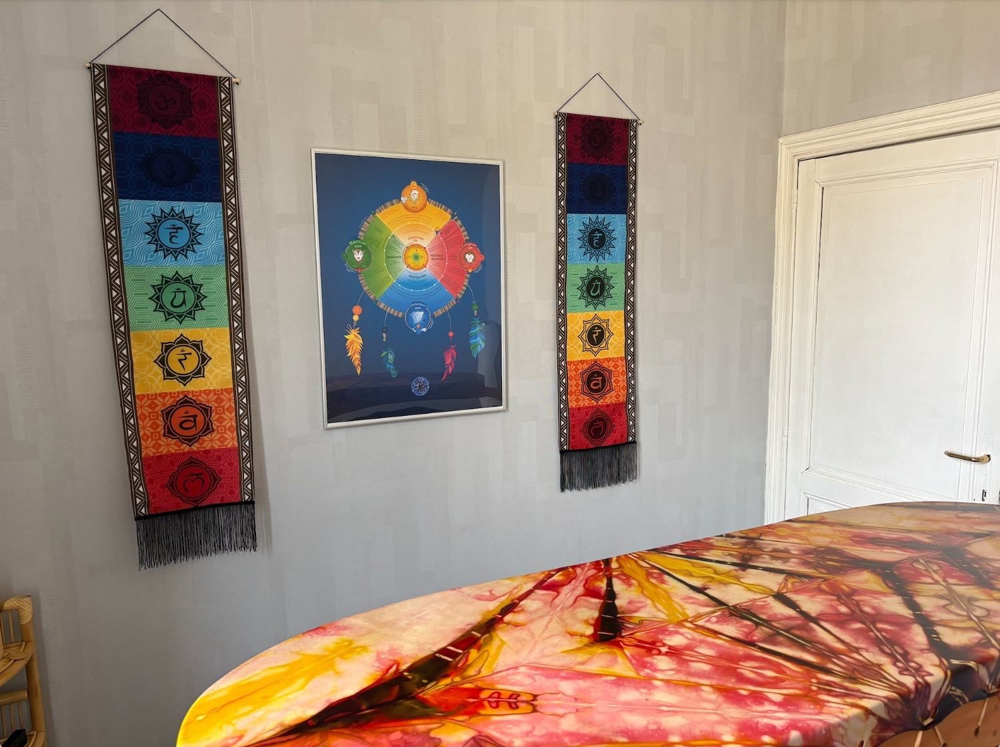

Les soins au tambour Unité
Des soins vibratoires sous l'égide de Lany Côté et Jacques Nadon, pour vous transporter dans un état profond de méditation et de reconnexion.
Le tambour Unité
Le tambour Unité, par sa grande taille, permet de recouvrir le corps de vibrations réparties uniformément au cœur de chaque cellule.
Quelques minutes de vibrations suffisent pour vous transporter dans un état modifié de conscience un état de méditation et de relaxation profonde. Ces fréquences vibratoires amènent l'harmonisation et la reconnection à votre vibration d'origine.
Quand tout est en place dans le corps et l'esprit, l'énergie circule librement et permet à chaque cellule, chaque organe, de fonctionner pleinement. Ces soins permettent de :


« Le tambour trouvera la juste façon de vous toucher et de vous transmettre ce dont votre âme a besoin au moment où elle en a besoin. »
Les soins vibratoires

Équilibration des 7 chakras
Ce soin apporte la paix et le calme, et libère ce qui doit l'être dans chacun des centres énergétiques. La personne est harmonisée, unifiée sur une même fréquence d'unité afin de se sentir plus complète et plus proche de son essence véritable.
Fusion des polarités
Cette séance enclenche un processus de réunification et de retour à l'équilibre entre le féminin et le masculin. Trop dans le féminin, on se repose sans passer à l'action. Trop dans le masculin, on agit sans jamais se poser. Ce soin invite à retrouver l'harmonie entre les deux.
Soin de renaissance
Pour qui vit une transition, un deuil, un changement de situation ou souhaite se libérer d'une situation qui l'encombre. Ce soin aide à reprendre du pouvoir sur soi-même et sur sa vie.
Le voyage chamanique
Ces cinq soins peuvent être réalisés dans l'ordre ou séparément, selon vos besoins.
 🦅
🦅
L'Aigle
Pour qui se sent prisonnier de ses peurs ou face à une situation inextricable. L'Aigle apporte une vision plus haute et plus claire, une grande énergie de propulsion. Il déclenche le mouvement et l'action dans une période de renouveau ou suite à une stagnation. Il montre qu'il existe plusieurs possibilités.
 🐺
🐺
Le Coyote
Pour qui désire transformer ses blocages conscients ou inconscients liés au passé. Le Coyote nous invite à ne pas prendre la vie trop au sérieux. Il nous reconnecte à notre enfant intérieur, à l'innocence, la joie, le lâcher-prise. Il libère les peurs, sort des illusions et remet de la créativité dans notre vie.
 🐻
🐻
L'Ours
Pour qui vit une période de transition, d'accomplissement ou de fin de cycle. L'Ours invite à s'arrêter, reconnaître son chemin, ralentir et écouter son intuition. Il réapprend à se respecter dans son rythme, à s'aimer et à se soutenir. Il aide à retourner à l'essentiel et à la simplicité du vivant.
 🦬
🦬
Le Bison
Pour qui veut reconnaître sa mission de vie et clarifier son rôle dans le monde. Le Bison aide à faire confiance à son intuition et à choisir avec courage. Il guérit les blessures de séparation, donne le sentiment d'être soutenu par la communauté visible ou invisible. Il apporte courage, stabilité et guidance dans les moments difficiles.
Le Cœur
Pour qui a besoin de faire le vide, de retrouver l'harmonie intérieure et extérieure, et de se connecter à sa force intérieure. Le soin du Cœur invite à la paix profonde et à l'unité avec soi-même.